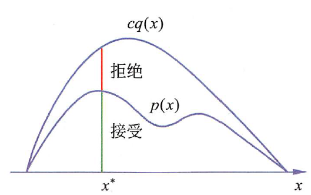
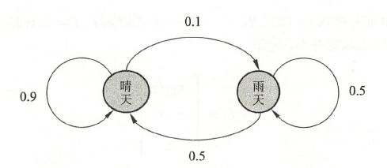
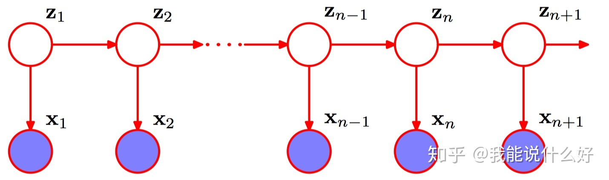
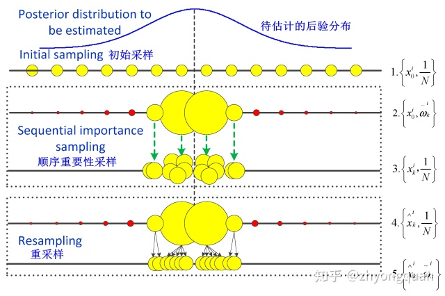
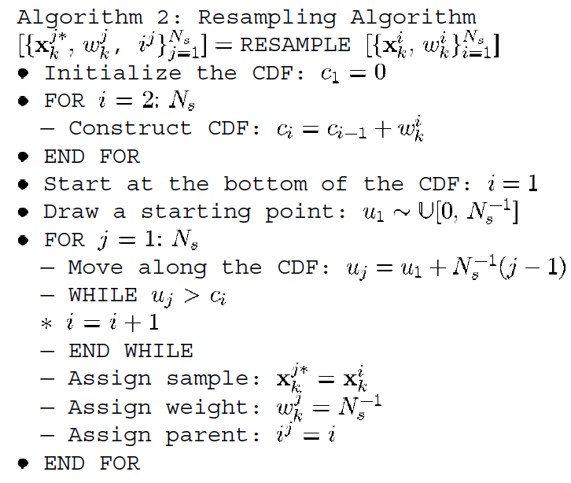

蒙特卡罗方法
蒙特卡罗（Monte Carlo）方法又称统计模拟方法，是通过从概率模型的随机抽样进行近似数值计算的方法。
维基上介绍的基本思想如下：
通常蒙特卡罗方法可以粗略地分成两类：一类是所求解的问题本身具有内在的随机性，借助计算机的运算能力可以直接模拟这种随机的过程。例如在核物理研究中，分析中子在反应堆中的传输过程。中子与原子核作用受到量子力学规律的制约，人们只能知道它们相互作用发生的概率，却无法准确获得中子与原子核作用时的位置以及裂变产生的新中子的行进速率和方向。科学家依据其概率进行随机抽样得到裂变位置、速度和方向，这样模拟大量中子的行为后，经过统计就能获得中子传输的范围，作为反应堆设计的依据。
另一种类型是所求解问题可以转化为某种随机分布的特征数，比如随机事件出现的概率，或者随机变量的期望值。通过随机抽样的方法，以随机事件出现的频率估计其概率，或者以抽样的数字特征估算随机变量的数字特征，并将其作为问题的解。这种方法多用于求解复杂的多维积分问题。
但实际上最常见的应用本身似乎并不像这些概念一般晦涩难懂，例如积分和圆周率的求解，用事件发生的频率来估计事件的概率，通过快速大量的模拟实验来得到问题的近似解：

蒙特卡洛是摩纳哥公国的一座城市，位于欧洲地中海之滨、法国的东南方，属于一个版图很小的国家摩纳哥公国，世人称之为“赌博之国”、“袖珍之国”、“邮票小国”。
蒙特卡洛的赌业，海洋博物馆的奇观，格蕾丝王妃的下嫁，都为这个小国增添了许多传奇色彩，作为世界上人口最密集的一个国度，摩纳哥在仅有1.95平方千米的国土上聚集了3.3万的人口，可谓地窄人稠。但相对于法国，摩纳哥的地域实在是微乎其微，在法国地图上，这个国中之国就像一小滴不慎滴在法国版图内的墨汁，小得不大会引起人去注意它的存在。
也许从名字的来源上可以更好的理解蒙特卡罗的思想：其要解决的问题是，假设概率分布的定义已知，通过抽样获得概率分布的随机样本，并以此来对概率分布的特征进行分析。比如，从样本得到经验分布，从而估计总体分布，或者从样本计算出样本均值，从而估计总体期望，核心是随机抽样。随着采样的增多，得到正确结果的概率逐渐加大，但是除非采用确定性方法进行采样，否则无法确定得到的是否为真正的正确结果。
接受-拒绝抽样法
有些时候分布$p(x)$无法直接采样，则我们可以通过找一个可以直接抽样的分布$q(x)$，即建议分布（proposal distribution）来间接采样。这里需要保证的是$cq(x)>p(x),c>0$始终成立，假设我们的抽样结果是$x^{x}$，则我们根据$\frac{p(x^x)}{cq(x^x)}$的概率来接受（即按照均匀分布在$(0,1)$范围内抽样，$u\leq\frac{p(x^x)}{cq(x^x)}$就接受）此次抽样：

重复上述步骤则可以得到概率分布的随机样本$x_1,x_2,\cdots,x_n$。
但实际上，针对一些复杂的分布我们只能得到其条件分布（边缘分布），却很难得到概率分布的一般形式，这个时候该方法并不适用。
马尔科夫链蒙特卡罗法
一般蒙特卡罗法中的抽样样本是独立的，而马尔科夫蒙特卡罗法中的抽样样本不是独立的，样本序列行程马尔科夫链。
马尔科夫过程
马尔科夫过程（Markov Process），又称为马尔科夫链（Markov Chain），其直观解释是：未来只依赖于现在，而与过去无关。
定义：考虑一个随机变量序列$X=\{ X_0,X_1,\cdots ,X_t,\cdots \}$，每个随机变量的取值集合都相同，即状态空间$S$，随机变量可以是离散或连续的，下标表示时间，以上序列构成随机过程。
假设$P(X_0)=\pi_0$，称为初始状态分布，在某个时刻随机变量$X_t$只与前一个时刻$X_{t-1}$有条件分布$P(X_t \mid X_{t-1})$，而不依赖过去的随机变量，这一性质成为马尔科夫性，即：
$$
P(X_t\mid X_0,X_1,\cdots,X_t,\cdots)=P(X_t \mid X_{t-1}),\quad t=1,2,\cdots
$$
具有该性质的随机序列成为马尔科夫过程，具备离散状态的马尔科夫过程通常成为马尔科夫链。
上述条件分布又称作马尔科夫链的概率转移分布，决定了马尔科夫链的特性。
若概率转移分布与时间无关，称为时间齐次（time homogeneous）的马尔科夫链，即：
$$
P(X_{t+s}\mid X_{t-1+s})=P(X_t \mid X_{t-1}),\quad t=1,2,\cdots;\quad s=1,2,\cdots
$$
以上定义为一阶马尔科夫链，若扩展到$n$阶，则是只与过去$n$个时刻相关。
之后讨论的默认都是时间齐次一阶马尔科夫链。
概率转移与平稳分布
马尔科夫链的转移概率可以用如下矩阵表示：
$$
P=\left[\begin{array}{cccc}{p_{11}} & {p_{12}} & {p_{13}} & {\cdots} \\ {p_{21}} & {p_{22}} & {p_{23}} & {\cdots} \\ {p_{31}} & {p_{32}} & {p_{33}} & {\cdots} \\ {\cdots} & {\cdots} & {\cdots} & {\cdots}\end{array}\right]
$$
满足所有元素不为负且列和为1，该矩阵又称为随机矩阵。
形象的解释是，当前的状态转移到其他所有状态都有可能，具体的概率取决于当前状态和其他的状态，但可能性的总和为1，例如下图：

马尔科夫链的初始状态分布可以表示为：
$$
\pi(0)=\left[\begin{array}{c}{\pi_{1}(0)} \\ {\pi_{2}(0)} \\ {\vdots}\end{array}\right]
$$
那一次状态转移的过程就可以表示成一次矩阵乘法的形式，实际上，递推可以得到：
$$
\pi(t)=P^t\pi(0)
$$
这里的$P^t$称为$t$步转移概率矩阵。
平稳分布：在此状态进行随机状态转移，之后任一时刻的状态分布都是该分布。求解平稳分布，只需要假设平稳分布代入上述转移解方程即可。
若有唯一平稳分布存在，当$t$足够大时，$P^t$的每一列都是平稳分布（遍历定理）。
马尔科夫链可能存在唯一、无穷或零个平稳分布
马尔科夫链蒙特卡罗法随机抽样
TODO
贝叶斯公式
贝叶斯公式的形式本身很简单，但是具体到应用问题却总是让人云里雾里的，原始的定义如下：
$$
P\left(B_{i} | A\right)=\frac{P\left(B_{i}\right) P\left(A | B_{i}\right)}{\sum_{j=1}^{n} P\left(B_{j}\right) P\left(A | B_{j}\right)} =\frac{P\left(B_{i}\right) P\left(A | B_{i}\right)}{P\left(A\right)}
$$
后验为先验（Prior）与似然（Likelihood）的乘积除以证据（Evidence），但是使用这种方法表示并不好理解，之前发现一张很生动的图：
我们假定数据为$X$，需要推断的参数为$\theta$，则贝叶斯公式可以表示为：
$$
P\left(\theta \mid X\right)=\frac{P\left(X \mid \theta\right) P\left(\theta \right)}{P\left(X\right)}
$$
频率派认为$\theta$是未知的常量，而$X$则是随机变量，主要研究样本空间，计算得到一个参数使得得到样本的概率最大：
$$
\theta_{MLE}=\arg \max _{\theta} \underbrace{\log P(X | \theta)}_{L(\theta)}
$$
而贝叶斯派则认为$\theta$是服从概率分布的随机变量，其分布$P(\theta)$称为先验，样本则是固定的，主要研究参数的分布，找到一个概率分布最大的点来做估计，即最大后验估计（ Maximum a Posterior ）：
$$
\theta_{MAP}=\arg \max _{\theta} {P(\theta \mid X)}
$$
贝叶斯预测
我们假定有一个新的样本$\tilde{x}$，则我们需要求的就是$p(\tilde{x} | X)$的分布，通过$X–>\theta–>\tilde{x}$把旧数据和新数据连接起来：
$$
\begin{array}{l}{p(\tilde{x} | X)=\int_{\theta}p(\tilde{x}, \theta | X) d \theta} {=\int_{\theta} p(\tilde{x} | \theta,X) p(\theta | X) d \theta}{=\int_{\theta} p(\tilde{x} | \theta) p(\theta | X) d \theta}\end{array}
$$
中间一步是条件概率公式，左侧的条件概率中$X$不相关可以被去除。
状态空间模型
通常状态空间模型定义如下：
$$
x_k=f_k(x_{k-1},u_{k-1})\\
y_k=h_k(x_k,n_k)
$$
其中，$k$代表时刻，$x_k$代表$k$时刻的状态，$y_k$代表$k$时刻的观测，$f(\cdot)$代表状态转移函数，$g(\cdot)$代表观测函数，$u_{k-1}$代表$k-1$时刻的模型噪声（如模型不够精确），$n_k$则代表$k$时刻的观测噪声（如观测设备的不准确）。状态本身是不能直接得到的，只能通过观测来估计。由于噪声的存在，我们无法估计出真实的状态，只能根据我们的观测以及某种最优准则（MinimalMSE，MAP等）得出一个估计值。
下图中使用了$x$来表示观测，$z$表示状态（潜变量）：

实际上因为我们是先进行预测操作，因此$k$时刻的模型噪声实际上是用$u_{k-1}$来表示。算法是迭代/递归的，在系统中我们不需要保存以往的观测数据，只需要根据目前的观测、之前的计算结果以及动态更新的函数即可。
这里实际上遵循了两个假设，这在预测和更新的推导中非常重要：
- （时间）齐次（一阶）马尔科夫假设：状态只与前一个状态有关
- 观测独立假设：每一个观测互相独立
非线性贝叶斯跟踪
从贝叶斯理论的观点来看，实时跟踪系统的状态就是根据到时间$k$为止的已知信息（观测）$y_{1:k}$，来递归地计算出状态$x_k$的可信度，用概率密度函数$p(x_k\mid y_{1:k})$来表示。
我们假设初始概率密度函数$p(x_0\mid y_{0})\equiv p(x_0)$是已知（先验概率）的，则通过迭代预测和更新两个步骤就可以递归地计算出$p(x_k\mid y_{1:k})$。
假设$p(x_{k-1}\mid y_{1:k-1})$已知，在$k$时间进行上述两步操作（实际上，对下一步的预测在当前就可以进行）。
预测
利用查普曼-科尔莫戈罗夫等式（Chapman–Kolmogorov equation），可以由状态转移函数与时间 ${k-1}$的概率密度函数，$p(x_{k-1}\mid y_{1:k-1})$计算出时间$k$的先验概率${p(x_{k}\mid y_{1:k-1})}$。
由于状态转移模型被假设为一阶马尔科夫过程，故${p(x_{k}\mid x_{k-1}, y_{1:k-1})}=p(x_{k}\mid x_{k-1})$，而$p(x_{k}\mid x_{k-1})$则由状态转移函数和$v_{k-1}$的统计值得到:
$$
\begin{aligned} p\left(x_{k} | y_{1: k-1}\right) &=\int p\left(x_{k}, x_{k-1} | y_{1: k-1}\right) d x_{k-1} \\ &=\int p\left(x_{k} | x_{k-1}, y_{1: k-1}\right) p\left(x_{k-1} | y_{1: k-1}\right) d x_{k-1} \\ &=\int p\left(x_{k} | x_{k-1}\right) p\left(x_{k-1} | y_{1: k-1}\right) d x_{k-1} \end{aligned}
$$
更新
在时间$k$时我们获得了新的观测值$y_k$，因此可以利用贝叶斯法则，由先验概率${p(x_{k}\mid y_{1:k-1})}$得到后验概率${p(x_{k}\mid y_{1:k})}$，即考虑观测值后的概率，其中的似然概率函数$p\left(y_{k} | x_{k}\right)$由观测函数和$n_k$的统计值得到：
$$
{p\left(x_{k} | y_{1: k}\right)=\frac{p\left(y_{k} | x_{k}\right) p\left(x_{k} | y_{1: k-1}\right)}{p\left(y_{k} | y_{1: k-1}\right)}} \
$$
其中的归一化常数（Evidence）为：
$$
{p\left(y_{k} | y_{1: k-1}\right)=\int p\left(y_{k} | x_{k}\right) p\left(x_{k} | y_{1: k-1}\right) d x_{k}}
$$
我们也可将后验概率表示为如下形式，就能得到递归更新的公式，即我们的滤波问题可以通过上一个规模更小的滤波问题来求解：
$$
\begin{aligned} p\left(x_{k} | y_{1: k}\right)&=\frac{p\left(x_{k} , y_{1: k}\right)}{p\left(y_{1: k}\right)}\\&=\frac{p\left(y_{1: {k-1}}\right)p\left(x_{k} , y_{k} \mid y_{1: {k-1}}\right)}{p\left(y_{1: {k-1}}\right)p\left(y_{k} | y_{1: k-1}\right)}\\&=\frac{p\left(y_{k} | x_{k}, y_{1: k-1}\right) p\left(x_{k} | y_{1: k-1}\right)}{p\left(y_{k} | y_{1: k-1}\right)} \\ &=\frac{p\left(y_{k} | x_{k}, y_{1: k-1}\right) p\left(x_{k} | x_{k-1}, y_{1: k-1}\right) p\left(x_{k-1} | y_{1: k-1}\right)}{p\left(y_{k} | y_{1: k-1}\right)} \\ &=\frac{p\left(y_{k} | x_{k}\right) p\left(x_{k} | x_{k-1}\right) p\left(x_{k-1} | y_{1: k-1}\right)}{p\left(y_{k} | y_{1: k-1}\right)} \\ & \propto p\left(y_{k} | x_{k}\right) p\left(x_{k} | x_{k-1}\right) p\left(x_{k-1} | y_{1: k-1}\right) \end{aligned}
$$
上述两步骤的递推关系是贝叶斯最优解的基本概念，但是公式中使用的积分，对于一般非线性，非高斯的系统，难以得到解析解，因此需要使用蒙特卡罗方法来近似。
总体步骤
总体而言，我们的跟踪过程（即Inference，测试过程，算法参数是在训练过程确定的）分为两部分，即更新（Update/Filtering）和预测（Prediction），在此基础上迭代进行：
$$
t=1,\left\{\begin{array}{l}{p\left(x_{1} | y_{1}\right) \quad – \quad update} \\ {p\left(x_{2} | y_{1}\right)\quad – \quad prediction }\end{array}\right.\\ \
t=2,\left\{\begin{array}{l}{p\left(x_{2} | y_{1:2}\right) \quad – \quad update} \\ {p\left(x_{3} | y_{1:2}\right)\quad – \quad prediction }\end{array}\right.\\ \\
\vdots \\ \\
t=T,\left\{\begin{array}{l}{p\left(x_{T} | y_{1:T}\right) \quad – \quad update} \\ {p\left(x_{T+1} | y_{1:T}\right)\quad – \quad prediction }\end{array}\right.\
$$
卡尔曼滤波
卡尔曼、粒子滤波实际应该叫做估计器（Estimator），估计当前值叫滤波（Filtering），估计过去叫平滑（Smoothing），估计未来叫预测（Predicting）。
卡尔曼滤波利用目标的动态信息，设法去掉噪声的影响，得到一个关于目标位置的好的估计。这个估计可以是对当前目标位置的估计（滤波），也可以是对于将来位置的估计（预测），也可以是对过去位置的估计（插值或平滑）。
卡尔曼滤波假设系统状态与噪声是高斯的，可以用均值和方差来描述。则上述状态空间模型可以被表述为：
$$
x_k=F_kx_{k-1}+B_ku_k+v_{k} \\\quad
y_k=H_kx_{k}+n_k
$$
其中：
- $F_k$是作用在$x_{k-1}$状态变换模型
- $B_k$是作用在控制器向量$u_k$上的输入-控制模型（系统内部控制）
- $v_{k}$是过程噪声，并假定$v_{k} \thicksim N(0,Q_k)$
- $n_k$是观测噪声，并假定$n_{k} \thicksim N(0,R_k)$
我们使用$P_k$来表示后验估计的误差协方差矩阵，用于度量估计值的精确程度（不确定性），矩阵的值表示各个变量的相关程度，则
$P_k=F_kP_{k-1}F_{k}^T+Q_k$。
综合我们的预测结果和观测结果，我们得到如下两个高斯分布：
$$
\begin{array}{l}{\left(\vec{\mu}_{0}, \Sigma_{0}\right)=\left(\mathbf{H}_{k} {\mathbf{x}}_{k}, \mathrm{H}_{k} \mathrm{P}_{k} \mathrm{H}_{k}^{T}\right)} \\ {\left(\vec{\mu}_{1}, \mathbf{\Sigma}_{1}\right)=\left(\mathrm{y}_{k}, \mathbf{R}_{k}\right)}\end{array}
$$
将这两个高斯概率密度函数相乘，我们就得到了一个新的高斯分布，这正是卡尔曼滤波想要的最优估计。
新的分布如下所示：
$$
\begin{aligned} \mathbf{K} &=\Sigma_{0}\left(\Sigma_{0}+\Sigma_{1}\right)^{-1} \\ \vec{\mu}^{\prime} &=\overrightarrow{\mu_{0}}+\mathrm{K}(\overrightarrow{\mu_{1}}-\overrightarrow{\mu_{0}}) \\ \Sigma^{\prime} &=\Sigma_{0}-\mathrm{K} \Sigma_{0} \end{aligned}
$$
也即：
$$
\begin{aligned} \mathbf{K} &=\mathrm{H}_{k} \mathrm{P}_{k} \mathrm{H}_{k}^{T}\left(\mathrm{H}_{k} \mathrm{P}_{k} \mathrm{H}_{k}^{T}+\mathbf{R}_{k}\right)^{-1} \\ \mathbf{H}_{k} {\mathbf{x}}_{k}^{\prime} &=\mathbf{H}_{k} {\mathbf{x}}_{k}+\mathrm{K}\left(\mathrm{y}_{k}-\mathrm{H}_{k} {\mathbf{x}}_{k}\right) \\ \mathbf{H}_{k} \mathbf{P}_{k}^{\prime} \mathbf{H}_{k}^{T} &=\mathrm{H}_{k} \mathrm{P}_{k} \mathrm{H}_{k}^{T}-\mathrm{KH}_{k} \mathrm{P}_{k} \mathrm{H}_{k}^{T} \end{aligned}
$$
化简可得：
$$
\begin{aligned} {\mathbf{x}}_{k}^{\prime} &={\mathbf{x}}_{k} +\mathbf{K}^{\prime}\left(y_{k}-\mathbf{H}_{k} {\mathbf{x}}_{k}\right) \\ \mathbf{P}_{k}^{\prime} &=\mathrm{P}_{k} -\mathbf{K}^{\prime} \mathbf{H}_{k} \mathbf{P}_{k} \\ \mathbf{K}^{\prime} &=\mathbf{P}_{k} \mathbf{H}_{k}^{T}\left(\mathrm{H}_{k} \mathrm{P}_{k} \mathrm{H}_{k}^{T}+\mathbf{R}_{k}\right)^{-1} \end{aligned}
$$
其中的$K^\prime$就是卡尔曼增益。
由此我们可以得到卡尔曼滤波的具体实现：
预测
$$
x=Fx+Bu \\ \quad P=FPF^T+Q
$$
修正
$$
dy =y-Hx \\ S =HPH^{T}+R \\ K =PH^{T} S^{-1} \\ x =x+K * {dy}
$$
$$
P =({I}-{K}{H}) *{P}
$$
其中，$dy$为观测余量，$S$为观测余量的协方差矩阵。
状态转移矩阵$F$，状态到观测的变换矩阵$H$通常都由训练数据得到，在测试过程中保持不变。
系统状态$x$，误差协方差矩阵$P$，卡尔曼增益$K$是不断迭代更新的，实际应用时$Q$和$R$依据具体情况来确定，可以不断调试寻找最优解，也可以是可变的。
扩展卡尔曼滤波
卡尔曼滤波器假设了两个条件：噪声符合高斯分布；系统是线性系统。此外，噪声、状态转移函数、观测函数通常是不变的。
实际中的问题可能并不满足这两个假设，扩展卡尔曼滤波通过将非线性系统线性化的方法处理非线性系统。
TODO
粒子滤波
粒子滤波器（particle filter）是一种使用蒙特卡罗方法的递归滤波器，透过一组具有权重的随机样本（称为粒子）来表示随机事件的后验概率，从含有噪声或不完整的观测序列，估计出动力系统的状态，粒子滤波器可以运用在任何状态空间的模型上。
粒子滤波器是卡尔曼滤波器的一般化方法，卡尔曼滤波器建立在线性的状态空间和高斯分布的噪声上；而粒子滤波器的状态空间模型可以是非线性，且噪声分布可以是任何型式。
看简介可以发现，粒子滤波的范围比卡尔曼滤波器更广，但是计算量要大上不少。
序列重要性采样（Sequential Importance Sampling, SIS）
SIS将后验概率${p(x_{k}\mid y_{1:k})}$用$N$个随机采样的样本（称作粒子）与其各自的权重表示为：
$$
\{x_k^{(i)},w_k^{(i)}\}_{i=1}^{N}
$$
其中权重则根据重要性采样的规则产生，且$\sum w_i=1$，则函数的期望可以用加权平均来近似：
$$
\int f\left(x_{k}\right) p\left(x_{k} | y_{1: k}\right) d x_{k} \approx \sum_{i=1}^{N} w_{k}^{(i)} f\left(x_{k}^{(i)}\right)
$$
SIS是将重要性采样递归执行的方法，通过前一次采样的权重来计算下一次采样的权重，假设采样的样本分布可以表示为：
$$
x^{(i)}\thicksim q(x),i=1,\cdots ,N
$$
其中$q(x)$称为重要性密度(importance density) ，若样本$x_k^{(i)}$（$k$是时间下标）由重要性密度$q(x_k\mid y_{1:k})$抽取出来，则权重可以表示为：
$$
w_{k}^{(i)} \propto \frac{p\left(x_{k}^{(i)} | y_{1: k}\right)}{q\left(x_{k}^{(i)} | y_{1: k}\right)}
$$
将重要性密度分解为（假定有这个分解）：
$$
q\left(x_{k} | y_{1: k}\right)=q\left(x_{k} | x_{k-1}, y_{1: k}\right) q\left(x_{k-1} | y_{1: k-1}\right)
$$
再将后验概率表示为：
$$
\begin{aligned} p\left(x_{k} | y_{1: k}\right)&=\frac{p\left(x_{k} , y_{1: k}\right)}{p\left(y_{1: k}\right)}\\&=\frac{p\left(y_{1: {k-1}}\right)p\left(x_{k} , y_{k} \mid y_{1: {k-1}}\right)}{p\left(y_{1: {k-1}}\right)p\left(y_{k} | y_{1: k-1}\right)}
\\&=\frac{p\left(y_{k} | x_{k}, y_{1: k-1}\right) p\left(x_{k} | y_{1: k-1}\right)}{p\left(y_{k} | y_{1: k-1}\right)} \\ &=\frac{p\left(y_{k} | x_{k}, y_{1: k-1}\right) p\left(x_{k} | x_{k-1}, y_{1: k-1}\right) p\left(x_{k-1} | y_{1: k-1}\right)}{p\left(y_{k} | y_{1: k-1}\right)} \\ &=\frac{p\left(y_{k} | x_{k}\right) p\left(x_{k} | x_{k-1}\right) p\left(x_{k-1} | y_{1: k-1}\right)}{p\left(y_{k} | y_{1: k-1}\right)} \\ & \propto p\left(y_{k} | x_{k}\right) p\left(x_{k} | x_{k-1}\right) p\left(x_{k-1} | y_{1: k-1}\right) \end{aligned}
$$
则权重的递归式可以表示为：
$$
\begin{aligned} w_{k}^{(i)} & \propto \frac{p\left(y_{k} | x_{k}^{(i)}\right) p\left(x_{k}^{(i)} | x_{k-1}^{(i)}\right) p\left(x_{k-1}^{(i)} | y_{1: k-1}\right)}{q\left(x_{k}^{(i)} | x_{k-1}^{(i)}, y_{1: k}\right) q\left(x_{k-1}^{(i)} | y_{1: k-1}\right)} \\ &=w_{k-1}^{(i)} \frac{p\left(y_{k} | x_{k}^{(i)}\right) p\left(x_{k}^{(i)} | x_{k-1}^{(i)}\right)}{q\left(x_{k}^{(i)} | x_{k-1}^{(i)}, y_{1: k}\right)} \end{aligned}
$$
序列重要性重采样（Sequential Importance Resampling, SIR）
经过几次迭代之后，很多例子的权重都变小到可以忽略不计，这就是SIS会造成的退化问题（degeneracy problem） 。我们定义有效粒子数为：
$$
\widehat{N_{e f f}}=\frac{1}{\sum_{i=1}^{N}\left(w_{k}^{(i)}\right)^{2}}
$$
若有效粒子数小于某一阈值，则对粒子做重采样，即可减缓退化问题。重采样的概念是去除权重过小的粒子，专注于权重较大的粒子。进行重采样时，要由现有的粒子分布取样，产生一组新的粒子。由于新样本独立同分布，因此权重重新设定为$\frac{1}{N}$。
粒子滤波的核心思想是随机采样+重要性重采样+预测，如下图所示：

若我们选取$q\left(x_{k}^{(i)} | x_{k-1}^{(i)}, y_{1: k}\right)=p(x_k\mid x_{k-1})$，则采样方式被确定，权重更新也可以被化简为$w_{k}^{(i)} \propto w_{k-1}^{(i)} p\left(y_{k} | x_{k}^{(i)}\right)$。该想法被称为“Generate and Test”，即根据状态生成现有观测，若生成的概率越大则采样的权重也就越大。
SIR算法流程
前提：$k-1$时刻的采样已经完成，$w_{k-1}^{(i)}$已知。
SIS：针对所有样本进行采样，并更新样本权重
$$
\begin{aligned} &for \ i=1,\cdots ,N \\x_k^{(i)}&\thicksim q(x_k\mid x_{k-1},y_{1:k}) \\w_{k}^{(i)} & \propto w_{k-1}^{(i)} \frac{p\left(y_{k} | x_{k}^{(i)}\right) p\left(x_{k}^{(i)} | x_{k-1}^{(i)}\right)}{q\left(x_{k}^{(i)} | x_{k-1}^{(i)}, y_{1: k}\right)}\end{aligned}
$$归一化样本权重
计算$\widehat{N_{e f f}}$，若$\widehat{N_{e f f}}<N_T$则需要重采样
重采样的方法很多，一种方法是利用概率密度函数PDF的积分CDF来均匀采样，具体的算法流程如下：

也就是说每个样本现在对应$[0,1]$之间的某个区间，权重越大的对应的区间越长，我们在$[0,1]$之间均匀采点，并取该点对应的样本，最后所有样本的权重重置为$\frac{1}{N}$。
参考资料
- 统计学习方法（第二版）-李航
- 轻松理解卡尔曼滤波


![[DL]Winograd快速卷积算法](/medias/featureimages/4.jpg)